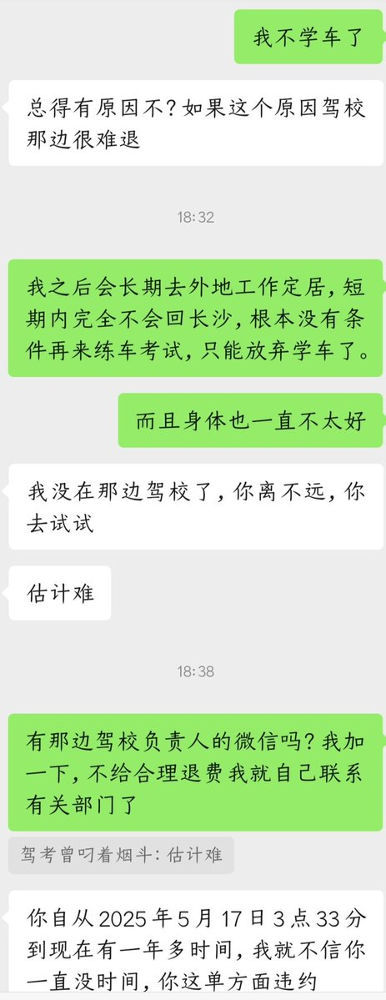
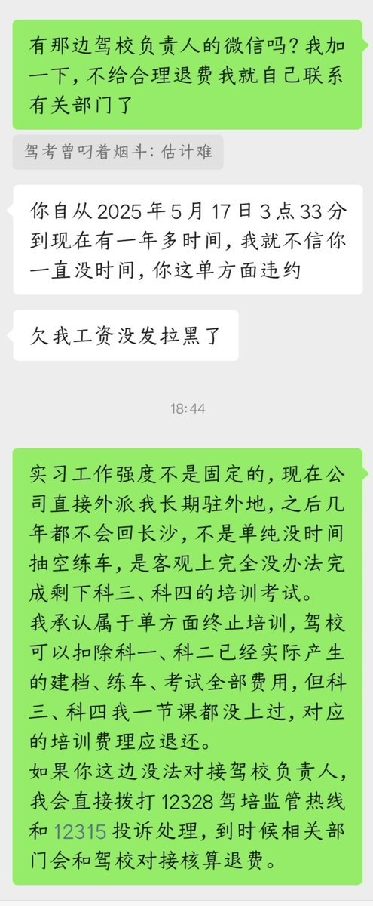

AZ.
@crossyangshe
哎，az最近生活实在很困难，饭都要吃不起了，想起来两年前在学校附近报了一个驾校来着，想着由于身体原因和精神状态确实不太好，想着就不学车了（az学车也很笨，科目二报名了两次考了四次都没有过），因为科目三没有学过，在网上搜了一下是可以退的，希望能退点钱能维持一下生活的开支，结果今天和教练反映了一下教练就各种扯皮，az离驾校那么也挺远的不可能浪费钱单独打车过去，没办法了只能在小程序上面反映一下看看有没有用吧

